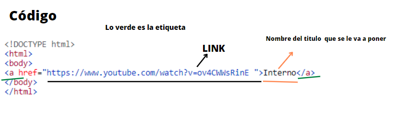
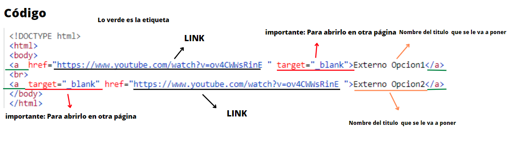
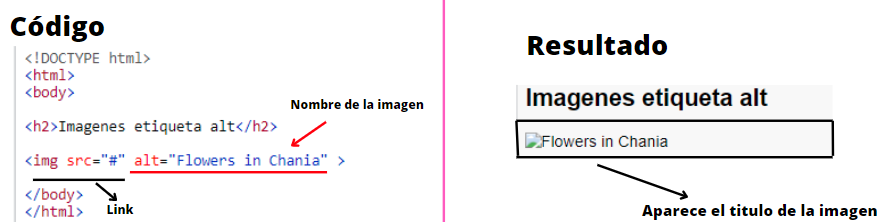
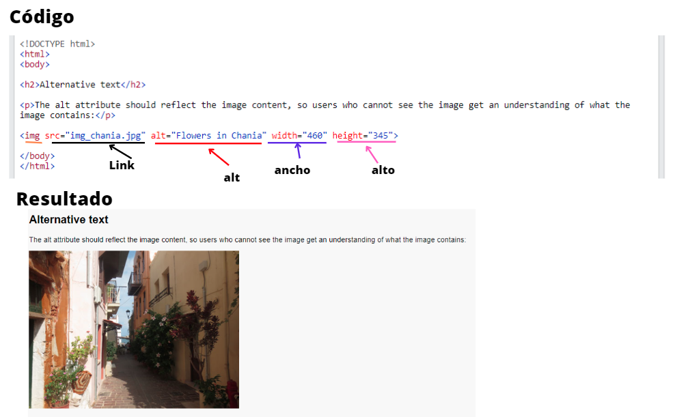

Tipo de elemento presente en los documentos electrónicos (páginas Web, correos electrónicos, documentos digitales de texto, etc.) que hace alusión a
otro documento diferente, a una parte específica del mismo documento o a otro recurso de cualquier naturaleza,
como búsquedas online, mecanismos de compra,
suscripciones, etc.
Fuente: https://concepto.de/hipervinculo/#ixzz7nNCizsiF
Los hipervínculos permiten una forma de desplazamiento novedosa, referida a menudo como el link, y que consiste en la asociación entre un texto y otro que no necesariamente comparten contexto o cometidos, pero que están encadenados entre sí por algún término, sentido o referencia. Fuente: https://concepto.de/hipervinculo/#ixzz7nNDhP7Iv
*Texto
*Imagen
*e-mail
*Funciones especificas
*Local o Interno
*Externo
Este se abrira desde la misma página al darle clic no abrira una nueva
Al darle clic se abrira en otra página
Este muestra dos estructuras distintas de escribirlo
Video ExplicandoPara agregar imagenes es importante una estructura y se vea en todos los programas ,
Se tienen etiquetas img : Es la mas importante esta no se cierra src: Es donde especifica la ruta alt:Este solo se mostrara si la imagen no funciona es decir no se ve y es como el nombre de la imagen Nota:No es necesario poner alt
Si por algún motivo no se puede mostrara la imagen lo que se pone de texto se ve
Determina el tamaño de la imagen simplemente
Es igual a las demas solo se pone gif al fin o dependiendo
Esta solo se agrega el a de un enlace y aparte el de la imagen en a se pone el link y lo demas la imagen